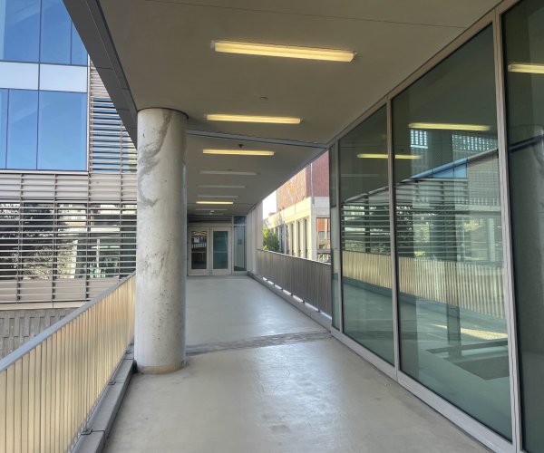
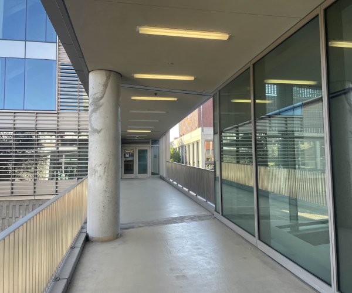

All photos are taken using my phone, with a slight rotation between each pair.


 

I wrote a computeH function that computes the homography matrix that is able to perform a transformation that can move the target image in any direction or angle (8 degrees of freedom). The homography matrix has 8 unknowns so we need at least 4 keypoint pairs. I ended up providing more than 4 pairs of points, and used least squares to find the optimal H.
After calculating H, we can warp one image to the other, using a similar interpolation approach as in Project 3: I map every pixel in the output image back to the corresponding location using the inverse H matrix, using map_coordinates when necessary to interpolate pixel values.
Using this warping, I am able to rectify some angled views of rectangular objects and warp them to a regular rectangular shape, showing what they would look like from a frontal view.


Zoomed Rectified Smash Poster
Using these warps, we can also create a mosaic. We warp one image onto the other using a set of keypoints. Simply placing these images on top of each other creates rough edges, so we use a multi-resolution blending approach similar to that in Project 2, creating a mask and using Gaussian and Laplacian stacks to blend the two images together. This creates these final mosaics:
For the second part of the project, we will create these same mosaics, but stitch them together automatically, rather than having to manually select corresponding points between the two images.
First, I used the provided get_harris_corners code to get all the corners in the image. This function discards key points near image borders and then uses peak_local_max to extract the most prominent corners.
Then using Adaptive Non-Maximal Suppression (ANMS), I chose the top 500 corners by selecting the corners with the largest radii. The formula for radii is:
Next, for each feature point detected, to extract descriptors from the key points, I implemented Multi-Scale Oriented Patches, or MOPS. For each key point, I sample a 40x40 patch around it. The patch is blurred and downsampled to an 8x8 patch to avoid noise, and then normalized. An example is shown:
Next, to match feature descriptors between two images, I used Lowe's ratio test. I calculated the SSD distance between each pair of descriptors from the two images. For each descriptor, I found the two closest matches. If the ratio between the first and second neighbors was below a threshold of 0.5, I kept that match. Here's the result:
To get rid of the outliers, I used Random Sample Consensus (RANSAC) to compute a robust homography matrix. This function works by selecting 4 random matches at a time to compute a homography matrix. For each homography, if the projected point is within a 5-pixel threshold, it is considered an inlier. This is repeated 200 times, and then finally, the homography with the most inliers is selected.
After using RANSAC to compute the homography matrix, I follow the same stitching/warping process as I used in part A of the project to produce the mosaics. I've displayed the results of the auto-stitched mosaics side by side with the mosaics from part A, which were created from manually matched points.
It was very interesting to see how the auto-stitching process was able to create mosaics that are as accurate as the ones that were created by me manually selecting points that I knew should correspond to each other, and the process was surprisingly not as complicated as I thought it would be. In particular, it was cool to see how Lowe's trick combined with RANSAC were able to very accurately pick out which pairs of points were the best for creating the mosaic.